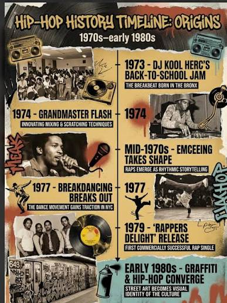
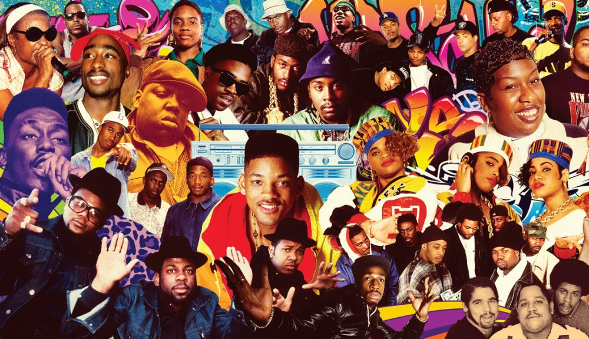
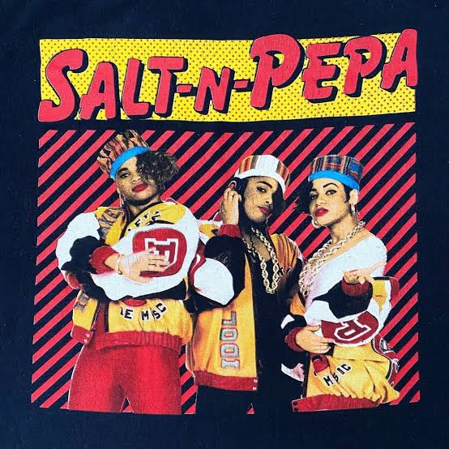

Hip-hop began in 1973 when DJ Kool Herc hosted a party in the Bronx and used two turntables to extend the instrumental breaks in songs. By the late 1970s, DJing, rapping, breakdancing, and graffiti had become its four main elements, while the Sugarhill Gang’s “Rapper’s Delight” introduced rap to a wider audience. During the 1980s, artists such as Run-D.M.C. and Public Enemy brought hip-hop into mainstream culture.
The 1990s, often called hip-hop’s Golden Age, produced influential artists such as Tupac Shakur, The Notorious B.I.G., Nas, and Lauryn Hill. In the 2000s, performers such as Jay-Z, Eminem, Kanye West, and Outkast expanded the genre’s popularity. Streaming and social media helped hip-hop become even more successful during the 2010s, while styles such as trap gained attention. Today, hip-hop continues to evolve through trap, drill, melodic rap, and other styles, influencing music, fashion, language, and culture around the world.
Women broke barriers in the male-dominated hip-hop industry by using their music to express confidence, independence, creativity, and social awareness. Pioneers such as MC Lyte, Queen Latifah, and Salt-N-Pepa challenged stereotypes and proved that female rappers could achieve commercial and artistic success. Lauryn Hill and Missy Elliott expanded the genre through powerful storytelling, singing, innovative production, and distinctive visuals, while Lil’ Kim influenced hip-hop fashion and encouraged women to express their sexuality confidently. Later artists such as Nicki Minaj, Cardi B, and Megan Thee Stallion built on this foundation, helping women gain greater visibility and control within hip-hop. Their influence can be seen in music, fashion, language, business, and the growing number of female artists entering the industry today.
Hip-hop developed distinct regional styles across the United States. East Coast rap, especially from New York, became known for complex lyrics, storytelling, sampling, and boom-bap beats, influenced by artists such as Nas, The Notorious B.I.G., Jay-Z, and Wu-Tang Clan. West Coast rap often featured relaxed funk-inspired production and vivid descriptions of street life, with artists such as N.W.A., Dr. Dre, Snoop Dogg, and Tupac Shakur shaping its sound. Southern hip-hop introduced heavy bass, energetic rhythms, distinctive slang, and later the trap sound, led by influential artists such as Outkast, UGK, Three 6 Mafia, Lil Wayne, and T.I. Midwest hip-hop became known for its variety, including rapid-fire rapping, soulful production, and experimental sounds. Artists such as Common, Twista, Bone Thugs-n-Harmony, Eminem, and Kanye West helped establish the Midwest as an important and creative region in hip-hop.